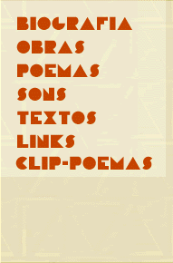

|
|  |
concrete poetry: a manifesto - concrete poetry begins by assuming a total responsibility before language: accepting the premise of the historical idiom as the indispensable nucleus of communiation, it refuses to absorb words as mere indifferent vehicles, without life, without personality without history - tabu-tombs in which convention insist on burying the idea. - the concrete poet does not turn away from words, he does not glance at them obliquely: he goes directly to their center, in order to live and vivify their facticity. - the concrete poet sees the word in itself - a magnetic field of possibilities - like a dynamic object, a live cell, a complete organism, with psycho-physico-chemical proprieties, touch antennae circulation heart: live. - far from attempting to evade reality or to deceive it, concrete poetry is against self-debilitating introspection and simpleton simplistic realism. It intends to place itself before things, open, in a position of absolute realism. - the old formal syllogistic-discursive foundation, strongly shaken at the beginning of the century, has served again as a prop for the ruins of a compromised poetic, an anachronistic hybrid with an atomic heart and a medieval cuirass. - against perspectivistic syntactic organization where words sit like "corpses at a banquet," concrete poetry offers a new sense of structure, capable of capturing without loss or regression the contemporaneous essence of poeticizable experience. - mallarmé (un coup de dés - 1897), joyce (finnegans wake), pound (cantos, ideogram), cummings, and on a secondary plane, apollinaire (calligrammes) and the experimental attempts of the futurists-dadaists are at the root of the new poetic procedure which tends to impose itself on a conventional organization whose formal unity is the verse (even free-). - the concrete poem or ideogram becomes a relational field of funcions. - the poetic nucleus is no longer placed in evidence by the successive and linear chaining of verses, but by a system of relationships and equilibriums between all parts of the poem. - graphic-phonetic functions-relations ("factors of proximity and likeness") and the substantive use of space as an element of composition maintain a simultneous dialectic of eye and voice, which, allied with the ideogrammic synthesis of meaning, creates a sentient "verbivocovisual" totality. In this way words and experience are juxtaposed in a tight phenomenological unit impossible before. - CONRETE POETRY: TENSION OF THING-WORDS IN SPACE-TIME (originally published in the review , ad - arquitectura e decoração, n. 20, november/december 1956, são paulo, brazil) translation: john tolman PILOT PLAN FOR CONCRETE POETRY (1958)
|